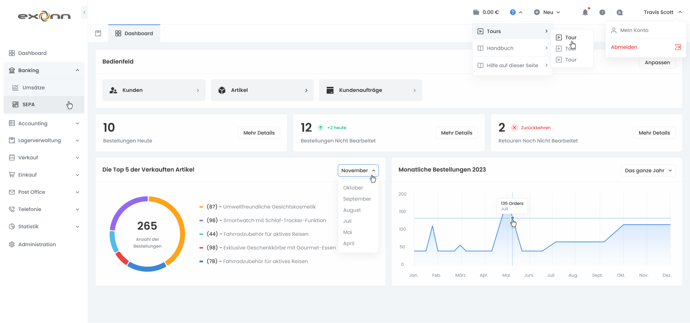
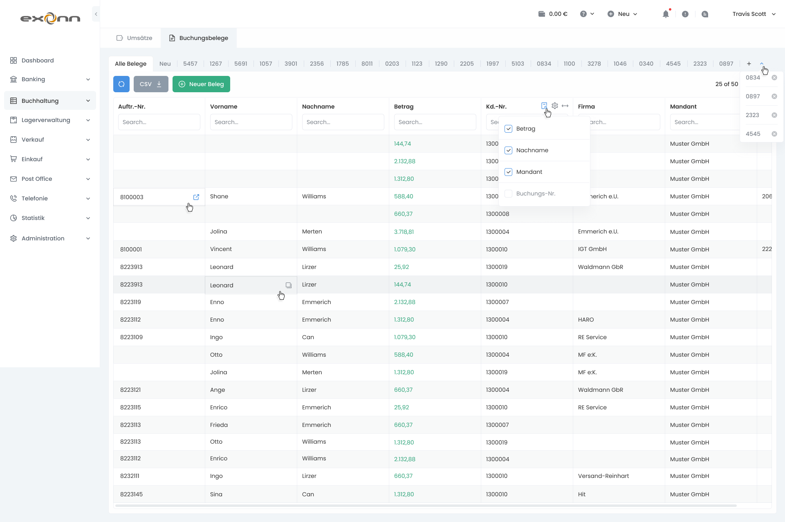
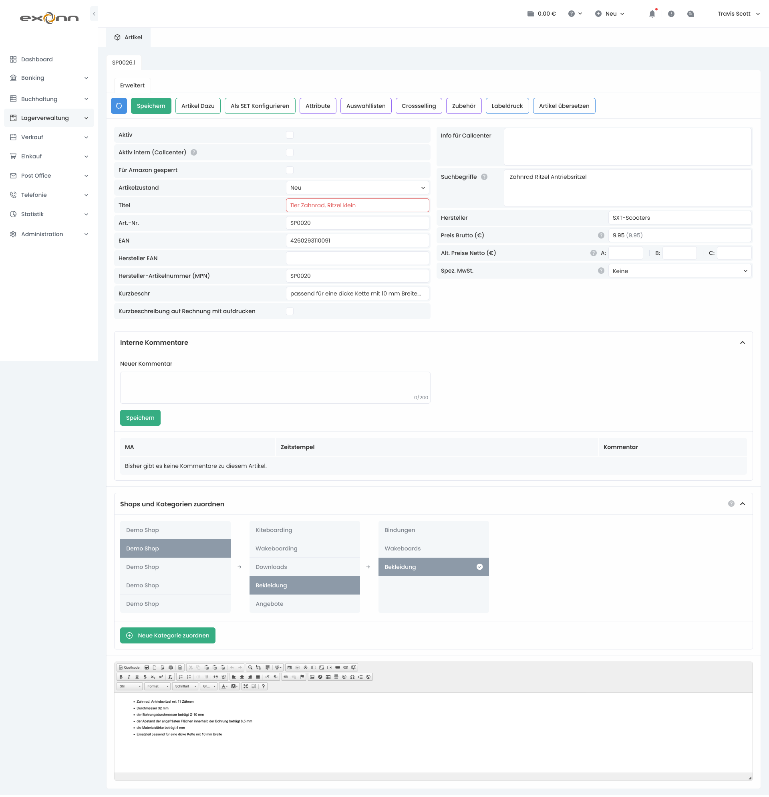
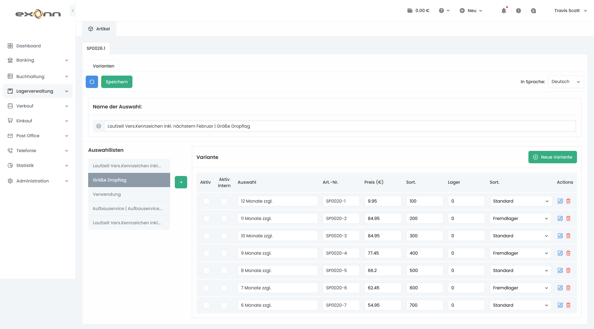
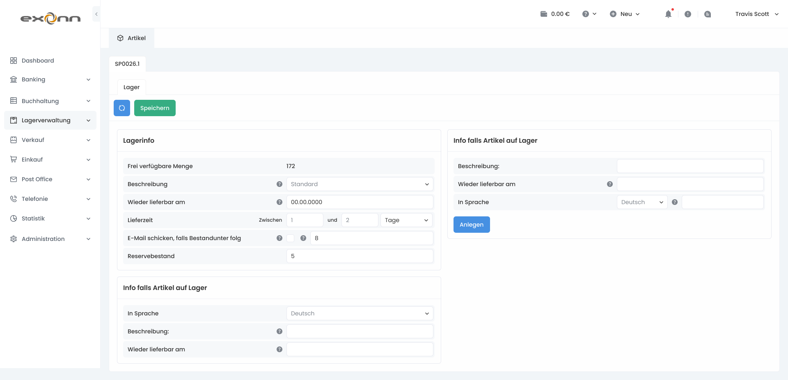
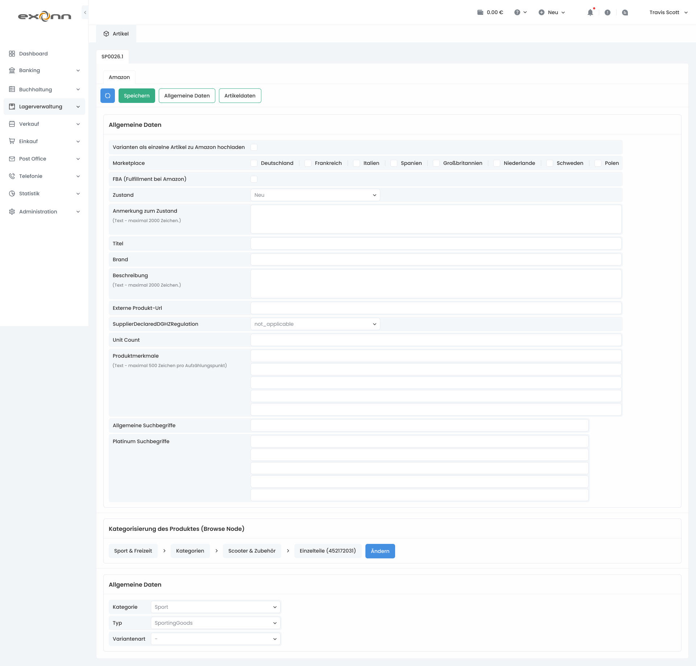
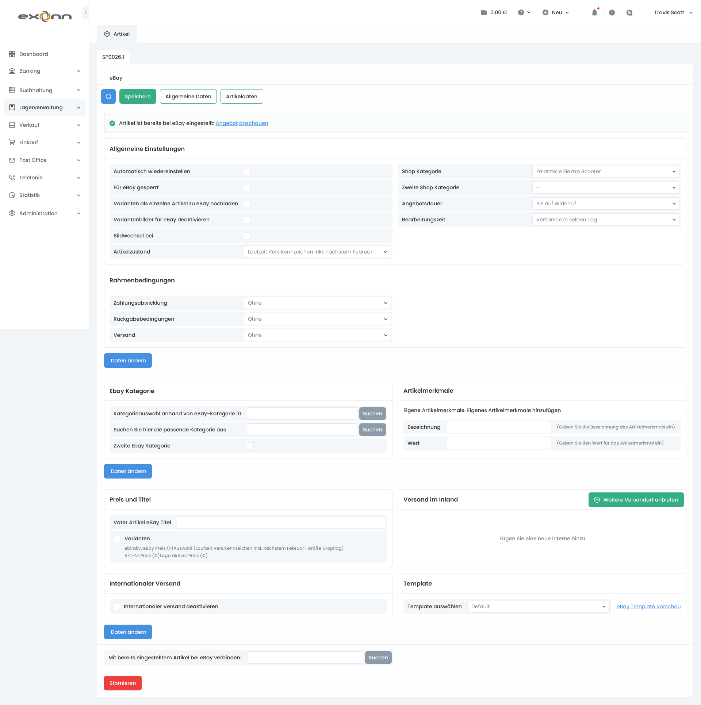
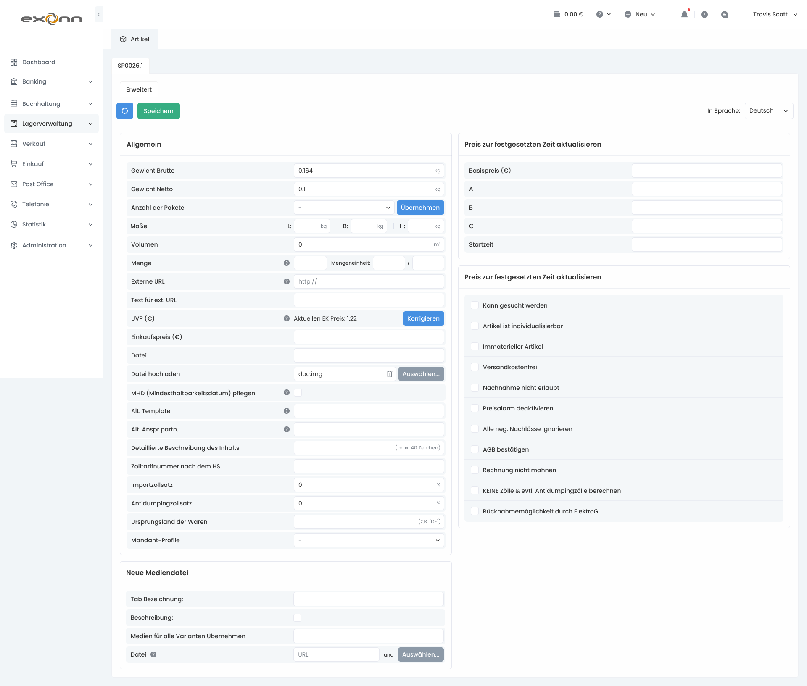

Exonn Core: Designing an ERP Ecosystem
Building a unified digital core for business processes, resources, and operational analytics with a focus on scalability and seamless UX.

Taming enterprise chaos: why Exonn Core was needed
Modern companies often struggle with fragmented digitalization: CRM in one place, warehouse management in another, and finances in a third. The lack of a single foundation leads to data silos and loss of control.
Information silos
Employees wasted hours manually transferring data between isolated tools, inevitably leading to human errors and reporting delays.
Cognitive overload
Legacy enterprise software interfaces required lengthy training and forced users to perform dozens of redundant clicks for basic operations.
Designing information architecture
During the discovery phase, a strict hierarchy of ERP entities was established. We divided the global space into managerial domains while maintaining instant contextual transitions between them.
Command center
Contextual widgets, critical business metric alerts, and quick actions for top management.
Domain workspaces
Specialized workspaces for logistics, finance, HR, and sales equipped with custom filters.
Universal entity hub
Unified customer, deal, and product cards featuring change histories and deep relational links.
Core ecosystem modules
Exonn Core unifies key company business processes within a single, seamless interface.
Accounting & document processing
Dense primary documentation registries, column customization, inline editing, and rapid artifact search.

Resource & inventory management
Management of product nomenclature, attributes, sales categories, stock levels, and multichannel integrations.

Detailed screen & state breakdown
Interface solutions for complex forms, product modifications management, marketplace synchronization, and inventory reservation.





Scalable Exonn UI design system
To support the endless expansion of the ERP ecosystem, a token-based component library was created in Figma, ensuring interface consistency across all complexity levels.
High-density interfaces for handling large volumes of data
Specialized high-density data grids were developed with column customization support, inline editing, batch operations, and instant search. A strict status color system was implemented to reduce cognitive load.
Implementation results & impact
Designing Exonn Core transformed a fragmented set of tools into a powerful business asset for the company.
Processing speed
The time required to process client requests and generate closing documents was reduced by more than half.
Scalability
The architecture enabled the seamless addition of new vertical modules without rewriting core interface patterns.
User satisfaction
The Customer Satisfaction (CSAT) score among operational departments increased from 62% to 91%.